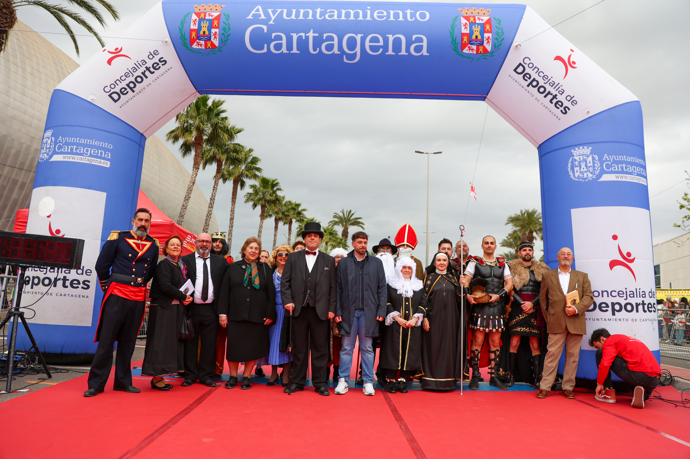

The XXXIII Media Maratón y 10K Ciudad de Cartagena, run in memory of Gregorio Lorente Rosas, took over the city on Sunday 1 March with a joint 9:30am start for both distances. The 21km half marathon and the 10K shared the same start and finish line at the Palacio de Deportes, sending runners out through some of Cartagena’s most emblematic streets.
Organisers reported a record turnout for the thirty-third edition, with 2,800 bibs sold and registrations closing with the possibility of reaching 3,000 — the biggest field in the race’s history. Traffic was cut across central Cartagena from 9:30am to 12:45pm, including Avenida del Cantón between the Palacio de Deportes and Calle Soldado Rosique, while youth races for categories from Sub10 to Sub18 followed through the early afternoon.

True to the organisers’ own description of the race as a meeting point for “sport, history and the Cartagena spirit,” the finish line doubled as a civic celebration, with local dignitaries and costumed historical performers gathering under the arch to greet runners as they crossed the line.

Image Media covered the race with a four-person team — Eduardo Castro, Paulo Nomade, Jose Ramon Moreno and Casian Nicorescu — capturing the winning moments at the tape, the crowds lining the finish straight, and the civic ceremony that closed out the morning.
Galleries from the race are now live for participants to find and buy their photos, with the organising club receiving a full highlight pack to help promote next year’s edition.